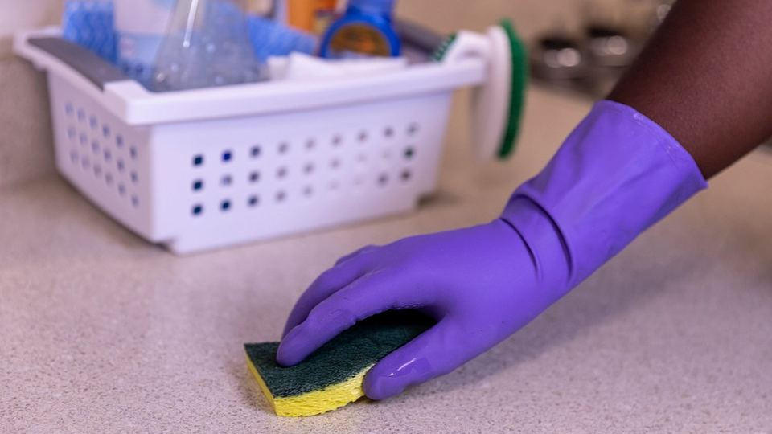

家事代行が気になっていても、「家の中を他人に見られるのが恥ずかしい」「何をどこまでお願いしてよいのか分からない」と感じて、申し込みの手前で止まってしまう方は少なくありません。
初めてのことは、誰でも不安なものです。ただ、事前に流れを知り、お願いしたいことを少し整理しておくだけで、当日の気持ちはずいぶん楽になります。
この記事では、家事代行を初めて頼むときの流れと、お願いする内容の決め方・伝え方、当日までの準備をまとめました。「頼んでみてよかった」と思える1回目にするための参考にしてください。
初めての家事代行とは｜こんな人に向いています
家事代行は、スタッフが自宅に来て、掃除や片づけ、洗濯、料理の作り置きなどを代わりに行うサービスです。決まった時間の中で、こちらがお願いした家事を順番に進めてもらう形が一般的です。
「全部をきれいにしてもらう」より、「自分では手が回らない部分を任せる」と考えると、頼み方が決めやすくなります。
- 共働きで平日に余裕がない方：週末を家事に使わずに過ごせるようになります
- 小さな子どもがいる方：子どもを見ている間に、水回りや床の掃除を任せられます
- 体調や体力に不安がある方：かがむ・持ち上げるといった負担の大きい家事を減らせます
- 引っ越しや来客の前に整えたい方：単発で頼めるサービスなら、必要なときだけ使えます
- 家事の段取りを見直したい方：プロの進め方を見ることで、日々の家事のヒントが得られます
初めて頼む前に決めておきたい4つのこと

1. いちばん困っている家事を1つ決める
初回は、あれもこれもとお願いしたくなりますが、時間には限りがあります。まずは「これが片づくと一番楽になる」という家事を1つ決めると、満足度が上がりやすくなります。
たとえば、浴室やキッチンなどの水回り、たまった洗濯物、平日の夕食の作り置きなどです。優先順位の高い順に2〜3個書き出しておくと、時間が余ったときにもスムーズにお願いできます。
2. 定期で頼むか、単発で試すか
家事代行には、毎週や隔週など決まった間隔で来てもらう定期の利用と、1回だけ頼む単発の利用があります。初めての方は、お試しのプランや単発の利用で、スタッフとの相性や進め方を確かめてから決めると安心です。
定期の利用は、同じスタッフに続けて来てもらえることが多く、家の勝手を覚えてもらえる良さがあります。暮らしのリズムに合わせて、無理のない頻度を考えてみてください。
3. 在宅するか、留守中に頼むか
初回は、立ち会いを求めるサービスが多いです。お願いする内容や家の使い方を、その場で直接伝えられるのは安心につながります。
2回目以降は、鍵を預けて留守中に作業してもらえるサービスもあります。鍵の受け渡し方法や管理の仕組みは、サービスごとに確認しておきましょう。
4. 使ってほしい道具と、触れてほしくない場所
掃除用具や洗剤は、自宅にあるものを使うのが一般的です。使ってほしい洗剤や、素材の都合で使えない洗剤があれば、あらかじめ伝えておきます。
「ここは触らないでください」という場所を最初に伝えておくと、お互いに気をつかわずに済みます。書類が置いてある机の上や、子どもの作品を飾っている棚など、遠慮せずに伝えて大丈夫です。
ポイント
お願いしたいことは、紙やスマートフォンのメモに「場所・やってほしいこと・優先順位」を書いておくと、当日の説明が短く済み、聞き漏れも防げます。
家事代行サービスを比較
初回はお試しのプランで相性を確かめたい方、スマートフォンから手軽に予約したい方など、重視したい点によって合うサービスは変わります。各サービスの特徴を下の表にまとめました。
おすすめサービス比較表
| サービス | 料金の目安 | 特徴 | 申込み |
|---|---|---|---|
| イチオシ家事代行のCaSy | 1時間2,790円(税込)〜 | WEBから1分で予約可能・初回定期割引あり | 料金を見る |
| 2家事代行のキャットハンド | 1時間1,980円〜 | 初回トライアルあり・一人暮らし向けプランあり | 料金を見る |
※料金・内容は各社の公式情報・広告素材の記載をもとにした目安です（2026年10月時点）。最新の料金・条件は必ず公式サイトでご確認ください。
比べるときは、料金だけでなく、初回の流れや予約の取りやすさ、キャンセルの条件も見ておくと、続けやすいサービスが見つけやすくなります。
申し込みから当日までの流れ
初めての家事代行は、おおむね次のような流れで進みます。細かな手順はサービスによって違いますが、全体の流れを知っておくと安心です。
- 申し込み：公式サイトやアプリから、希望の日時や作業内容を選んで予約します
- 事前のやりとり：必要に応じて、作業内容や家の状況について確認の連絡があります
- 当日の説明：スタッフが到着したら、お願いしたいことや注意してほしい点を伝えます
- 作業：決めた時間の中で、優先順位の高い家事から進めてもらいます
- 最後の確認：終わったら一緒に仕上がりを見て、気になるところがあればその場で伝えます
当日は、床に物が多く置かれていると、片づけに時間がかかってしまうことがあります。完璧に片づける必要はありませんが、作業してほしい場所の周りだけ、少し空けておくと進めやすくなります。
一般的に、家事代行の料金は1時間あたり数千円程度が目安で、交通費や鍵の預かりなどが別にかかることもあります。初回の割引やお試しのプランを用意しているサービスもあるため、詳しくは公式サイトでご確認ください。
利用するときの注意点
注意
- キャンセルの期限：前日や当日のキャンセルは、料金がかかることがあります。予定が変わりやすい方は、期限を確かめておきましょう
- 作業の範囲：高い場所の掃除や、家具の移動、ペットの世話などは、対応していないサービスもあります
- 貴重品の管理：現金やアクセサリーなどの貴重品は、作業前にしまっておくと、お互いに安心です
- 延長の扱い：時間内に終わらなかった場合に延長できるか、延長料金がどうなるかを確認しておきます
注意
万が一、作業中に物が壊れた場合の補償や、相談の窓口はサービスによって異なります。大切な家具や家電がある場合は、申し込む前に補償の内容を確認しておきましょう。
よくある質問
散らかったままの部屋を見られるのが恥ずかしいです。
家事代行のスタッフは、さまざまな家庭で作業をしています。片づいていないから頼む、という方も多いので、気にしすぎなくて大丈夫です。気になる場所は、最初に「ここは見ないでほしい」と伝えておくと安心です。
当日はずっとそばにいたほうがよいですか？
最初に説明を済ませたら、別の部屋で過ごしたり、自分の用事をしたりしてかまいません。途中で確認したいことがあれば、スタッフから声をかけてもらえることが多いです。
仕上がりが思っていたのと違ったら、どうすればよいですか？
気になる点は、作業の最後に一緒に確認するときに伝えると、その場で直してもらえることがあります。後から気づいた場合の対応はサービスによって違うため、各社の公式サイトや窓口でご確認ください。
スタッフを替えてもらうことはできますか？
相性が合わないと感じた場合に、スタッフの変更を受け付けているサービスは多いです。言いにくいときは、運営会社の窓口に相談すると、角が立たずに済みます。
まとめ
この記事のポイント
- 初めての家事代行は、いちばん困っている家事を1つ決めて、優先順位をメモしておくと頼みやすい
- お試しや単発の利用で相性を確かめ、触れてほしくない場所や使う道具は最初に伝える
- キャンセルの期限や作業の範囲、補償の内容を、申し込む前に確認しておく
家事を人に頼むことは、手を抜くことではなく、自分や家族の時間を大切にするための選択です。まずは1回、気になっている家事を1つだけお願いするところから始めてみてください。